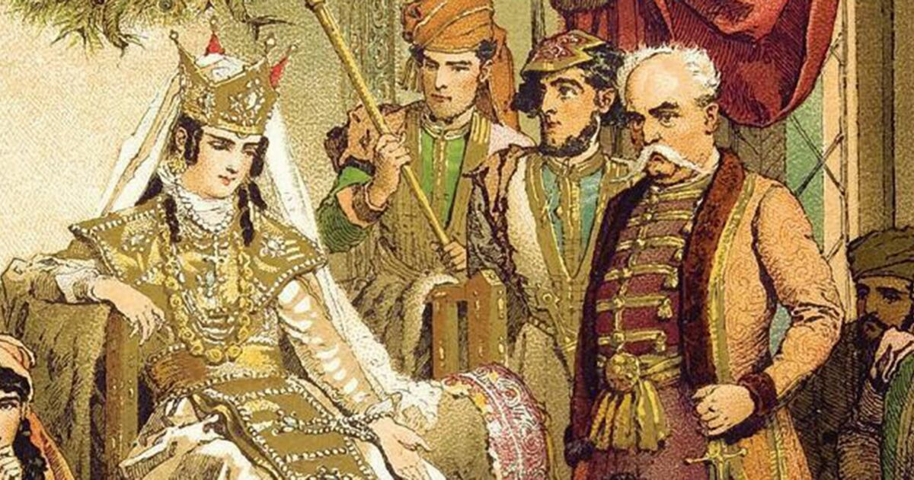

Geschichte
Die Geschichte Georgiens reicht über 3000 Jahre zurück und begann mit den antiken Königreichen Kolchis und Iberien. Im Mittelalter blühte das Land unter der Herrschaft von Königin Tamara auf und wurde zu einer regionalen Macht. Später geriet Georgien unter osmanischen und persischen Einfluss, bevor es im 19. Jahrhundert vom Russischen Kaiserreich annektiert wurde. Nach einer kurzen Unabhängigkeit zwischen 1918 und 1921 folgte die lange Sowjetzeit bis 1991. Mit dem Zerfall der Sowjetunion erlangte Georgien seine Eigenständigkeit zurück. Seitdem arbeitet das Land am Aufbau demokratischer Strukturen und wirtschaftlicher Modernisierung. Politische und soziale Umbrüche prägten die jüngere Geschichte. Heute strebt Georgien eine engere Anbindung an Europa an.
